Claudine Dan
Claudine Dan — site officiel. Faites défiler pour commencer le voyage.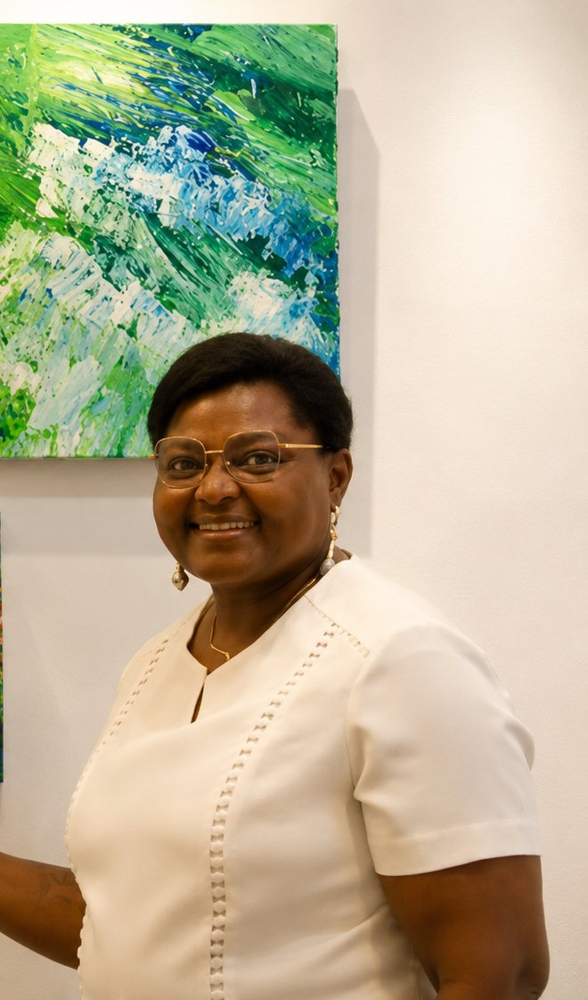
« Des mathématiques à la peinture — ma vision de l'art consiste à mettre sur la toile les problématiques de la libération de l'âme. »
Claudine DanCotonou, 1968.
Bac scientifique, puis mathématiques et physique.
Docteure en mathématiques. Professeure pendant vingt ans.
Elle voulait écrire les mathématiques en bande dessinée.
En 2016, aux Beaux-Arts de Besançon, la peinture la rattrape.
Exposée à l'UNICEF, en 2018.
À l'ambassade du Bénin, à Paris.
Au Palais National, au Bénin.
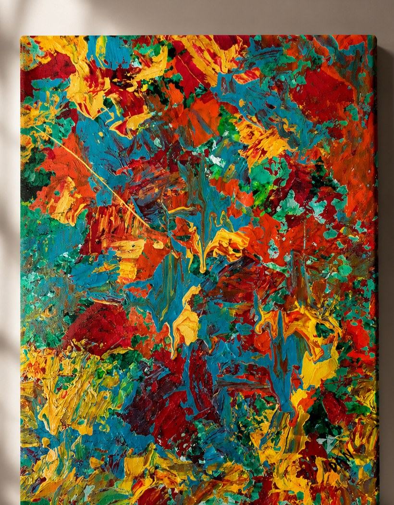
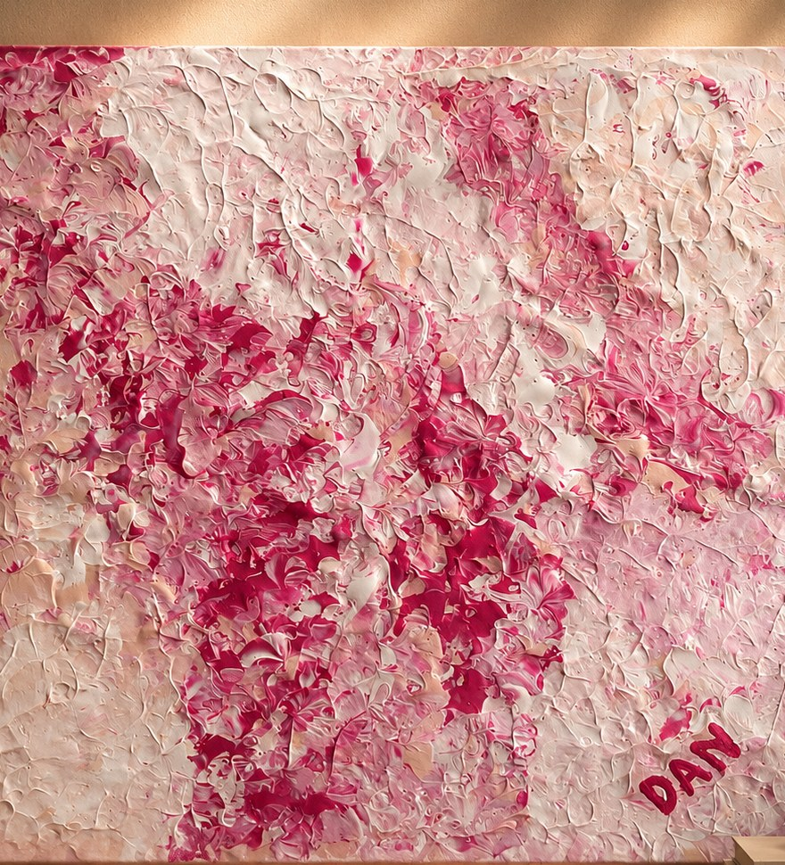
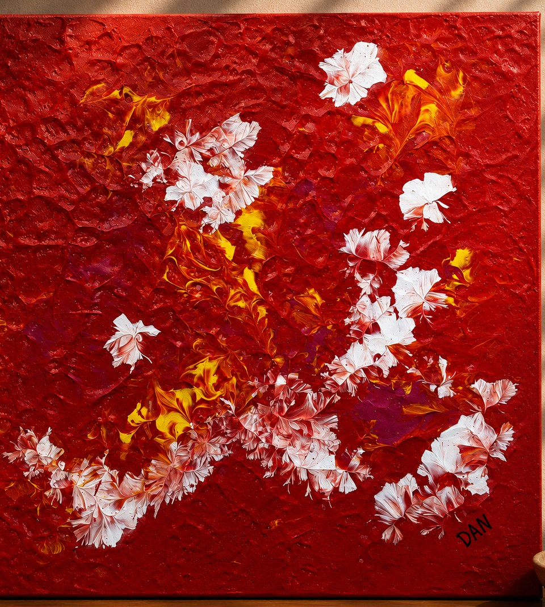
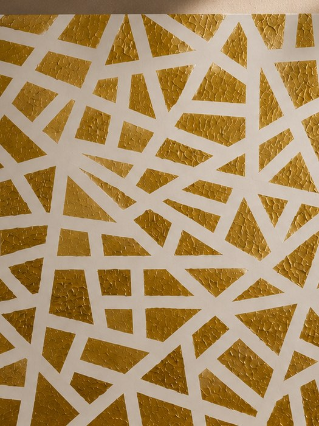
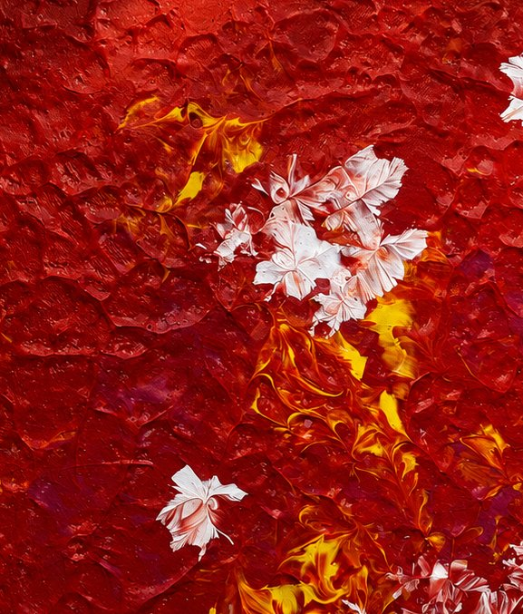
Le grain, le geste, la matière.
« De la couleur naît la joie. »
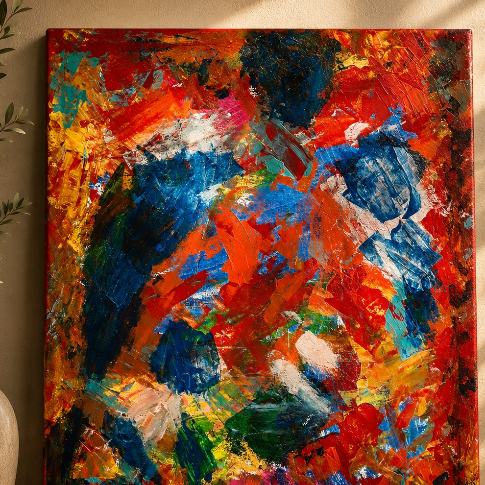
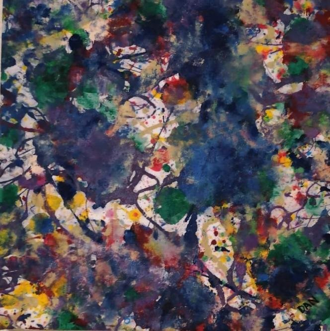
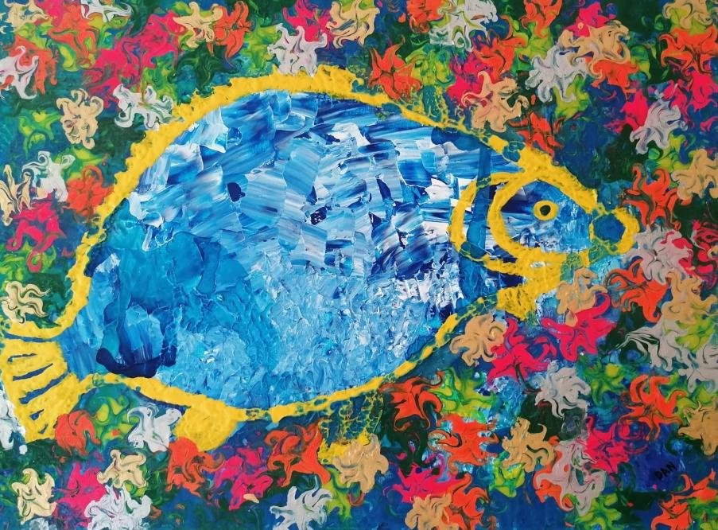
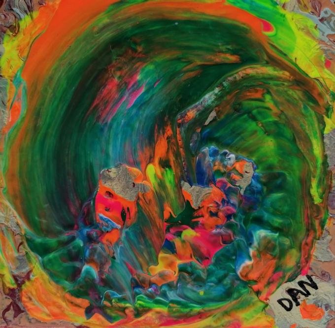
Sept navires ont porté ses toiles jusqu'à Ouidah.
Près de la Porte du Non-Retour.
Un geste pour la paix des âmes de ses aïeux.
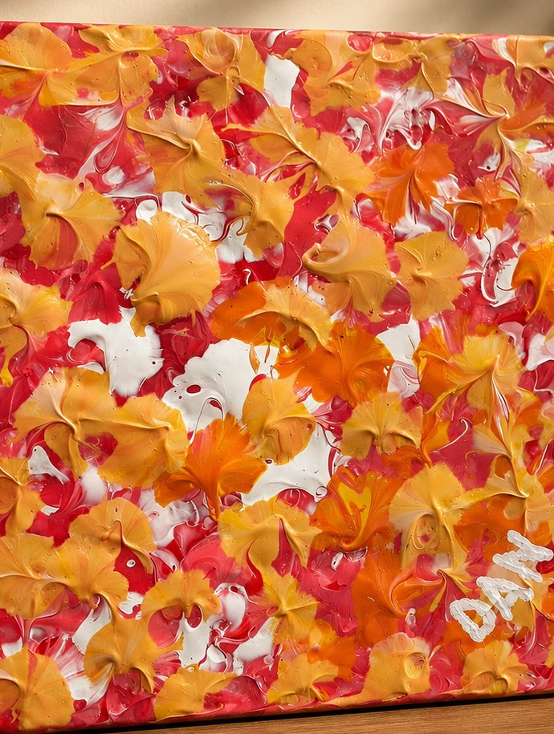

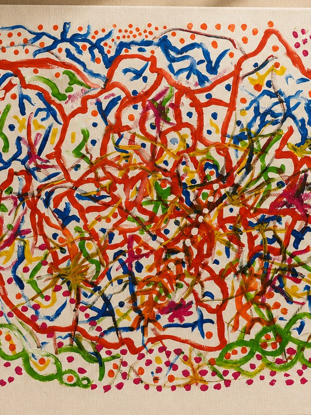
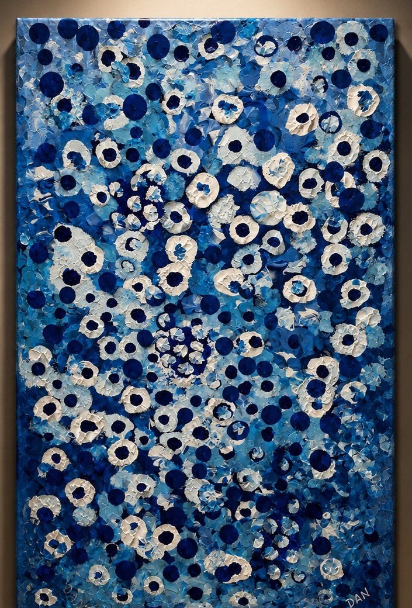
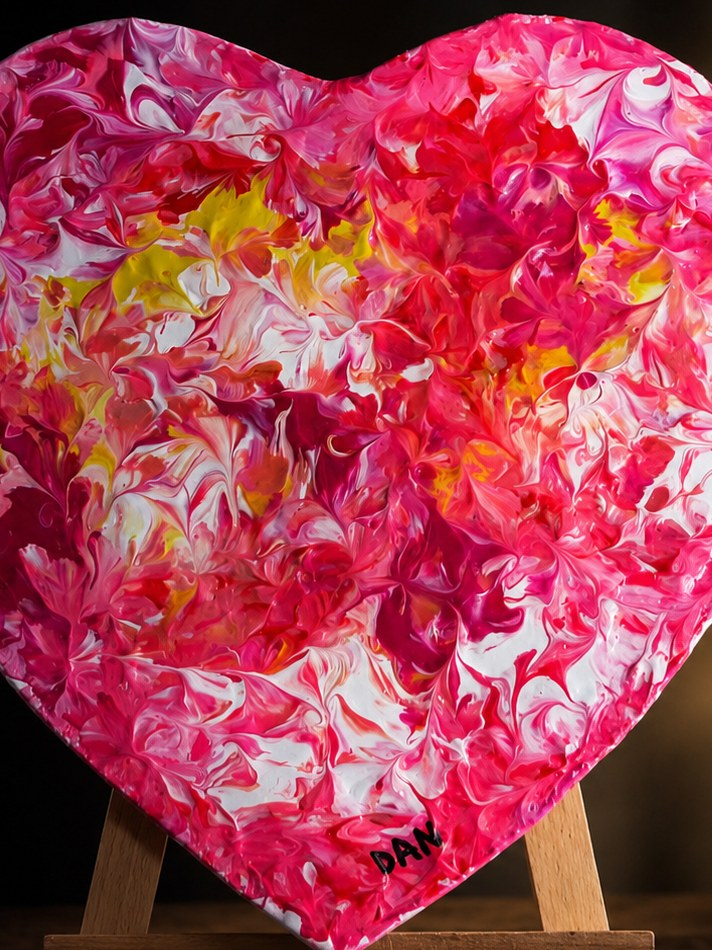
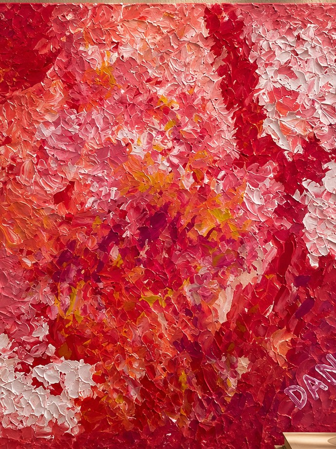
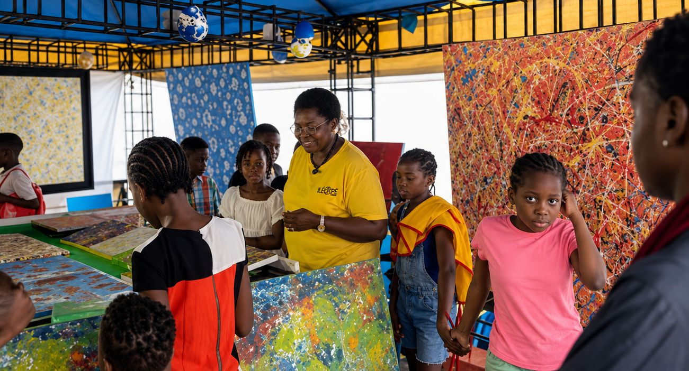
Transmission
Des ateliers mobiles avec des enfants de 6 à 12 ans, de l'art-thérapie avec des seniors — une artiste qui donne autant qu'elle expose.
Des œuvres confiées au CHU Minjoz et à l'hôpital psychiatrique de Novillars : la guérison par la peinture.
Pour les personnes autistes, malentendantes ou muettes, un dispositif pensé pour leur rendre, par la couleur, leurs lettres de noblesse.